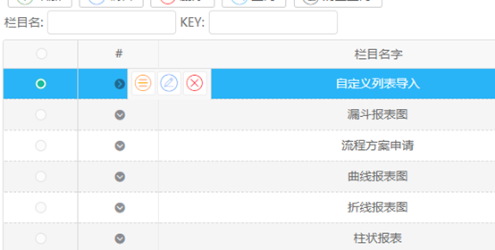
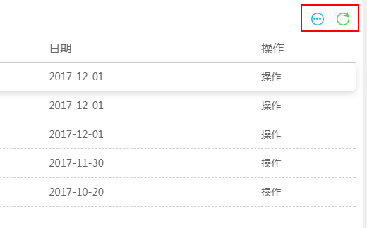
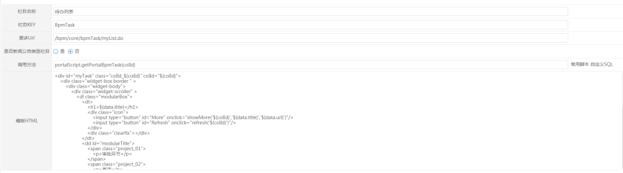
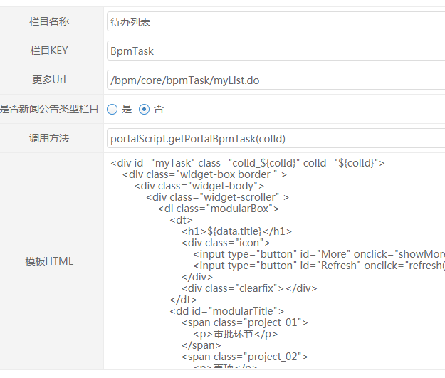
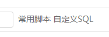

功能说明
自定义栏目管理是管理自定义栏目的模板，类型，以及增删查改。

以及在将栏目放在门户中的显示，栏目一般有两个按钮，一个为跳转更多，跳转去该栏目的管理页面。另一个是刷新按钮。

操作步骤
点击【编辑】按钮：


【更多URL】：设置首页栏目点击更多按钮时跳转地址
【是否新闻公告类型】：新闻公告类型是一种特殊的栏目类型，如果是该类型，则可以查看该栏目下的新闻，新闻公告在【新闻公告管理】中管理。
【调用方法】：在调用方法这里有两个按钮 。常用脚本表示栏目在显示时会调用预先写好的方法，方法写在portalScript.js里。自定义SQL会讲选择的SQL查询结果默认的显示出来。可以在模板里修改显示样式。
【模板HTML】：该栏目在首页上的显示样式模板。